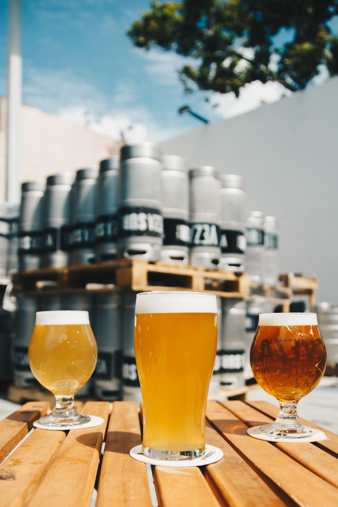

History of Beer
Early beers

Beer is one of the world's oldest prepared alcoholic drinks. The earliest archaeological evidence of fermentation consists of 13,000-year-old residues of a beer with the consistency of gruel, used by the semi-nomadic Natufians for ritual feasting, at the Raqefet Cave in the Carmel Mountains near Haifa in Israel. There is evidence that beer was produced at Göbekli Tepe during the Pre-Pottery Neolithic (around 8500 BC to 5500 BC). The earliest clear chemical evidence of beer produced from barley dates to about 3500–3100 BC, from the site of Godin Tepe in the Zagros Mountains of western Iran. It is possible, but not proven, that it dates back even further—to about 10,000 BC, when cereal was first farmed. Beer is recorded in the written history of ancient Egypt, and archaeologists speculate that beer was instrumental in the formation of civilizations. Approximately 5000 years ago, workers in the city of Uruk (modern day Iraq) were paid by their employers with volumes of beer. During the building of the Great Pyramids in Giza, Egypt, each worker got a daily ration of four to five litres of beer, which served as both nutrition and refreshment and was crucial to the pyramids' construction.
Some of the earliest Sumerian writings contain references to beer; examples include a prayer to the goddess Ninkasi, known as "The Hymn to Ninkasi", which served as both a prayer and a method of remembering the recipe for beer in a culture with few literate people, and the ancient advice ("Fill your belly. Day and night make merry") to Gilgamesh, recorded in the Epic of Gilgamesh by the alewife Siduri, may, at least in part, have referred to the consumption of beer. The Ebla tablets, discovered in 1974 in Ebla, Syria, show that beer was produced in the city in 2500 BC. A fermented drink using rice and fruit was made in China around 7000 BC. Unlike sake, mould was not used to saccharify the rice (amylolytic fermentation); the rice was probably prepared for fermentation by chewing or malting. During the Vedic period in Ancient India, there are records of the consumption of the beer-like sura. Xenophon noted that during his travels, beer was being produced in Armenia.
Almost any substance containing sugar can naturally undergo alcoholic fermentation and thus be utilised in the brewing of beer. It is likely that many cultures, on observing that a sweet liquid could be obtained from a source of starch, independently invented beer. Bread and beer increased prosperity to a level that allowed time for the development of other technologies and contributed to the building of civilizations.
Through Europe
Beer was spread through Europe by Germanic and Celtic tribes as far back as 3000 BC, and it was mainly brewed on a domestic scale. The product that the early Europeans drank might not be recognised as beer by most people today. Alongside the basic starch source, the early European beers may have contained fruits, honey, numerous types of plants, spices, and other substances such as narcotic herbs. What they did not contain was hops, as that was a later addition, first mentioned in Europe around 822 by a Carolingian Abbot and again in 1067 by abbess Hildegard of Bingen.

In 1516, William IV, Duke of Bavaria, adopted the Reinheitsgebot (purity law), perhaps the oldest food-quality regulation still in use in the 21st century, according to which the only allowed ingredients of beer are water, hops, and barley-malt. Beer produced before the Industrial Revolution continued to be made and sold on a domestic scale, although by the 7th century AD, beer was also being produced and sold by European monasteries. During the Industrial Revolution, the production of beer moved from artisanal manufacture to industrial manufacture, and domestic manufacture ceased to be significant by the end of the 19th century. The development of hydrometers and thermometers changed brewing by allowing the brewer more control of the process and greater knowledge of the results.
In 1912, brown bottles began to be used by the Joseph Schlitz Brewing Company of Milwaukee, Wisconsin, in the United States. This innovation has since been accepted worldwide and prevents harmful rays from destroying the quality and stability of beer.
The brewing industry is now a global business, consisting of several dominant multinational companies and many thousands of smaller producers, ranging from brewpubs to regional breweries. As of 2006, more than 133 billion litres (35 billion US gallons), the equivalent of a cube 510 metres on a side, of beer are sold per year, producing total global revenues of US$294.5 billion. In 2010, China's beer consumption hit 450 million hectolitres (45 billion litres), or nearly twice that of the United States, but only 5 percent sold were premium draught beers, compared with 50 percent in France and Germany.
A widely publicised study in 2018 suggested that sudden decreases in barley production due to extreme drought and heat could in the future cause substantial volatility in the availability and price of beer.